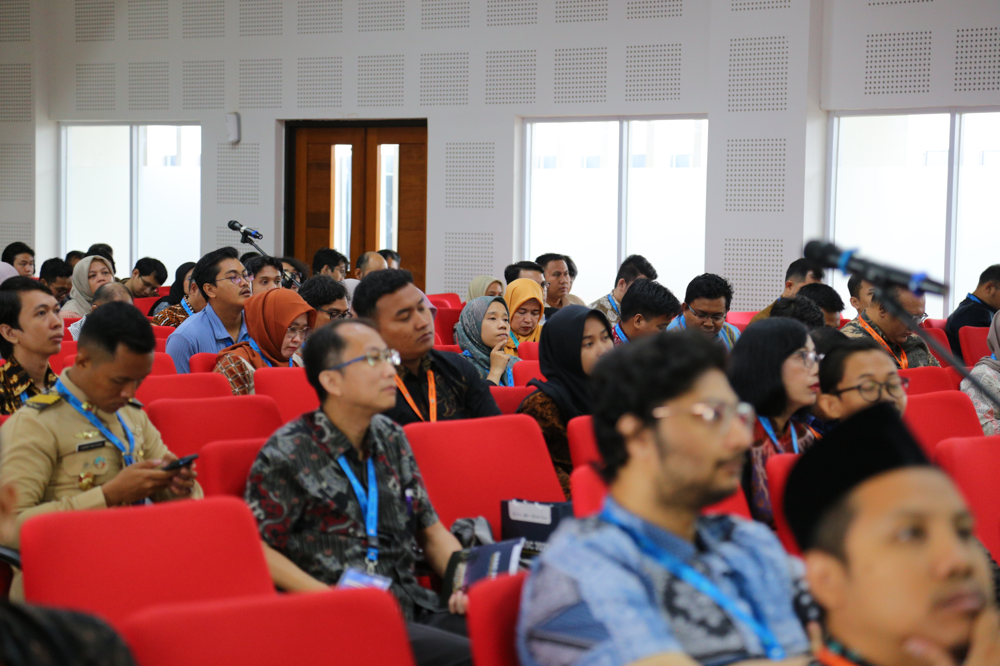
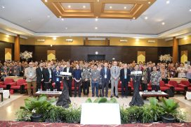
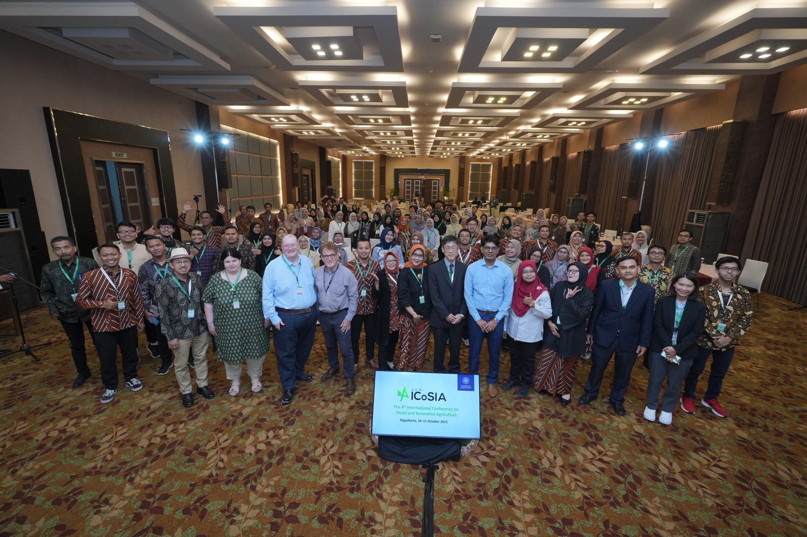
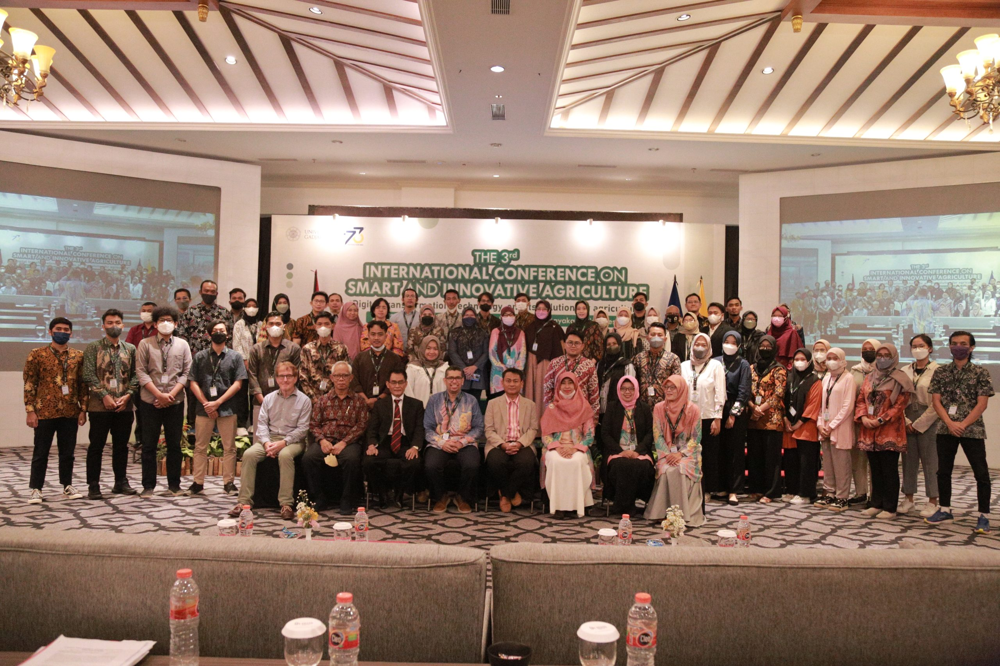
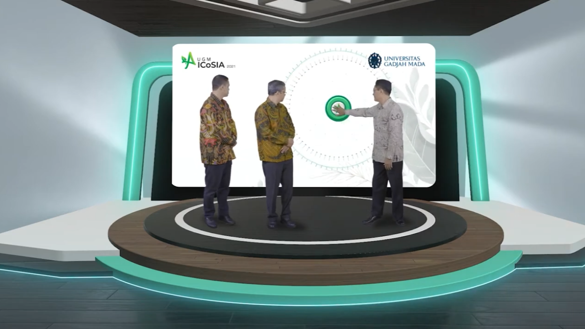
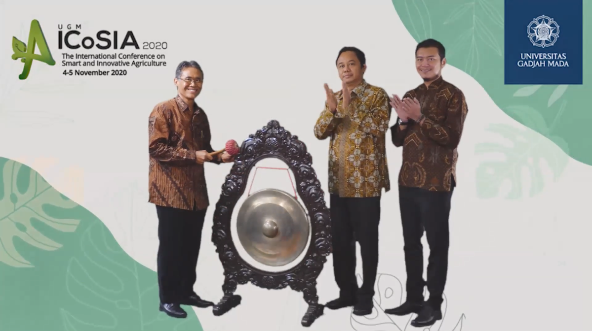

International Conference on
Smart and Innovative Agriculture
organizing history

ICoSIA 2025
30–31 July 2025 in R. Soegondo Building, UGM Faculty of Cultural Sciences, Yogyakarta, Indonesia
This year, seven symposia have been held: Agricultural Big Data Analysis Symposium; Agricultural Geography Symposium; Land and Environmental Management Symposium; Precision Nutrition Technology Symposium; Smart and Precision Farming Symposium; Smart Genetics Resource Management and Utilization Symposium; and Sustainable Food Production Symposium. ICoSIA 2025 is in conjunction with the 11th International Conference on Science and Technology and the 6th International Conference on Bioinformatics, Biotechnology, and Biomedical Engineering.
The UASC 2025 has received over 391 submissions from 19 countries throughout the world. Selected papers that were presented have been published in proceedings indexed by Scopus/CPCI/DOAJ: BIO Web of Conferences.

ICoSIA 2024
23–24 October 2024 in Gadjah Mada University Club Hotel, Yogyakarta, Indonesia
This year, the conference taken the theme “Feeding the Planet Sustainably: a Convergence of Technology, Ecology, and Community” with seven symposia: Agricultural Big Data Analysis symposium; Agricultural Geography symposium; Land and Environmental Management symposium; Precision Nutrition Technology symposium; Smart and Precision Farming symposium; Smart Genetics Resource Management and Utilization symposium; and Sustainable Food Production symposium. ICoSIA 2024 is in conjunction with the 10th International Conference on Science and Technology.
The UASC 2024 has received over 385 submissions from 17 countries throughout the world. Selected papers that were presented have been published in proceedings indexed by Scopus/CPCI/DOAJ: BIO Web of Conferences.

ICoSIA 2023
10–11 October 2023 in Eastparc Hotel, Yogyakarta, Indonesia
This year, the conference taken the theme “Food Security and Resilience in Multidimensional Crises” with seven symposia: Agricultural Big Data Analysis symposium; Agricultural Geography symposium; Land and Environmental Management symposium; Precision Nutrition Technology symposium; Smart and Precision Farming symposium; Smart Genetics Resource Management and Utilization symposium; and Sustainable Food Production symposium.
Selected papers that were presented have been published in proceedings indexed by Scopus/CPCI/DOAJ: BIO Web of Conferences.

ICoSIA 2022
22–23 November 2022 in Grand Rohan Jogja, Yogyakarta, Indonesia
This year, the conference taken the theme "Digital transformation, technology, and its solution for agriculture" with seven symposia: Agricultural Big Data Analysis symposium; Agricultural Geography symposium; Land and Environmental Management symposium; Precision Nutrition Technology symposium; Smart and Precision Farming symposium; Smart Genetics Resource Management and Utilization symposium; and Sustainable Food Production symposium.
The ICoSIA 2022 has received over 102 submissions from 8 countries throughout the world: Indonesia, Australia, Trinidad and Tobago, Japan, Malaysia, United Stated of America, Kazakhstan, and Thailand. Selected papers that were presented have been published in proceedings indexed by Scopus/Clarivate/DOAJ: Advances in Biological Sciences Research by Atlantis Press.

ICoSIA 2021
3–4 November 2021 in Universitas Gadjah Mada's Faculty of Mathematics and Natural Sciences, Yogyakarta, Indonesia
This year, seven symposia have been held, Agricultural Geography symposium; Big Data Analysis symposium; Environmental Management symposium; Precision Nutrition Technology symposium; Smart and Precision Farming symposium; Smart Genetics Resource Management and Utilization symposium; and Sustainable Food Production symposium.
The ICoSIA 2021 has received over 86 submissions from 7 countries throughout the world: Indonesia, United States of America, Austria, Japan, South Korea, Sri Lanka, and Malaysia. Selected papers that were presented have been published in proceedings indexed by Scopus/Clarivate/DOAJ: Advances in Biological Sciences Research by Atlantis Press.

ICoSIA 2020
4–5 November 2020 in Universitas Gadjah Mada's Directorate of System and Information Resources, Yogyakarta, Indonesia
This year, six symposia have been held, Agricultural Economics and Marketing symposium; Big Data Analysis symposium; Environmental Management symposium; Precision Nutrition Technology symposium; Smart and Precision Farming symposium; and Sustainable Food Production symposium.
The ICoSIA 2020 has received over 80 submissions from 9 countries throughout the world: Indonesia, Taiwan, Thailand, United States of America, Mexico, Japan, Australia, Russia, and South Korea. Selected papers that were presented have been published in proceedings indexed by Scopus: IOP Conference Series: Earth and Environmental Science.